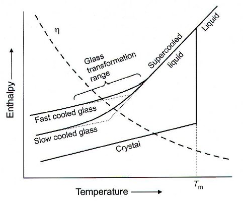
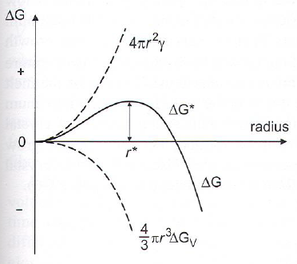
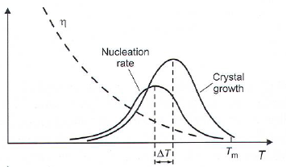
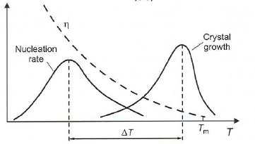
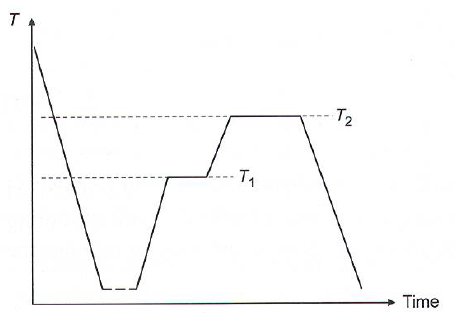
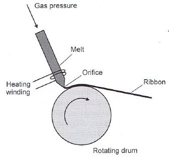
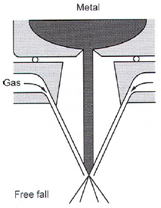
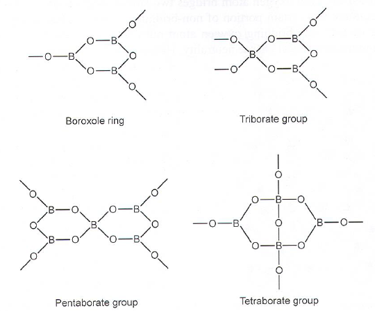

Glass
General
- Prepared by cooling from liquid state without crystallization
- Glass is an amorphous solid without long range order or periodicity in atom arrangement.
- Glass temp (T\(_g\)) is dependent on heat/cooling rate and experimental method. No STD-conditions
- Silicates easily forms glasses.
- 3D network formation is important for glass to form
- Highly ionic materials does not form networked structures.
- Vitreous (glass-like) networks are isotropic.

Zachariasens rules
- An Oxygen atom is at most linked to two other atoms.
- The coordination polyhedra formed by oxygen around other atoms share corners, not edges or faces.
- The coordination number of the other atom is small (<3/4 for M)
- The polyhedra link up to form 3D networks. at least 3 corners of the polyhedra must be shared.
Crystallization VS Glass formation
Nucleation and growth (Hetero/homogeneous nucleation) Absence of nuclei or no growth -> Glass formation
- Many components facilitate glass formation
- Homogeneous nucleation: Nucleation rate I:
- \(I \propto e^{\frac{-(\Delta G_N + \Delta G_D)}{kT}}\)
- \(\Delta G_N\) is free energy change for formation of nucleus (thermodynamic barrier for nucleation)
- \(\Delta G_D\) is the kinetic barier for diffusion across the liquid-nucleus surface.
- Network modifiers: Na\(_2\)O, CaO, B\(_2\)O\(_3\), Takes corner of tetrahedron and cuts chain -> lower viscosity (\(\eta\))
Spherical nucleation
Critical radius (\(r^*\)): The size where \(\Delta G\) starts to decrease -> growth is favoured.
- At T just below T\(_m\), volume free energy (\(\Delta G_V\)) is smll -> large critical radius -> low probability of reaching \(r^*\).
- Decreasing T -> smaller critical radius which means larger survival probability
- \(\Delta G_N = 4/3 \pi r^3 \Delta G_V + 4 \pi r^2 \gamma\)
- \(\gamma\) is crystal-melt interfacial energy
- \(\Delta G_V\) is change in volume free energy per initial volume (which is negative) 
Crystal growth
- Crystals grow at any T < T\(_m\) as long as a nuclei or crystal is present.
- Growth rates determined by thermodynamics and viscosity.
- Nucleation and growth will have maximums due to viscosity.
- 1ppm of glass can be crystal while still considered glass.
Crystallization system:  Glass forming system: 
Synthesis:
Raw materials -> Batching / mixing -> Batch melting -> Fining -> homogenization -> product Additives:
- Glass formers
- Network modifiers
- Colorants
- Finishing agents
Types
Glass ceramics
- Crystallization avoided in glass usually, but wanted here (to a degree)
- Glass ceramics get properties from crystal formation in a glass matrix (Figure below is not sintering, but temp high enough for small crystals to start growing) 
Metallic glasses
- Chill-block melt-spinning of glass ribbons (10-50 mm wide, only mm thick) 
- Droplet method (10\(^4\)K/s) 
- Surface melting with laser or electron beam
- Ion mixing: Multi-layers interfused with scanning ion beam (eg Xe)
- Bulk:
- >3 elements (High entropy alloy)
- Big size differences (>12%)
- Cooling: 10\(^5\)-10\(^6\) K/s
- Negative heat of mixing
- Metglass: Fe-Si-B, Fe-Ni-P-B
- Used in golf clubs, bouncymetal
Borate glasses
- Many different building blocks
- Silicate + metal oxides: non-bridging oxygen atoms
- Borate + metal oxides: Converts planar BO\(_3\) to tetrahedral BO\(_4\).
- Modification of Glass#Zachariasens rules: A high percentage of network cations must have 3 anions. 